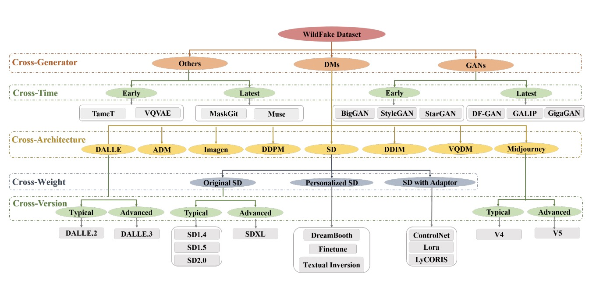

I pursued my M.E. in Automation and Artificial Intelligence Group at Nanjing University (NJU), where I was mentored by Prof. Chunlin Chen and Prof. Huaxiong Li. My B.E. was obtained at Southeast University (SEU).
My research interests include few-shot learning, image generation, self-supervised learning, computer vision, and machine learning. Currently, I focus on Representation Learning, AIGC, and Learning with Limited Data.
News
[May/2025]: One paper on “Vision mamba” is accepted to ICML 2025.
[Mar./2025]: I have joined the DeepLearning Lab at Ant Research Institute to pursue cutting-edge research in Artificial General Intelligence (AGI).
[Feb/2025]: One paper on “Multi-modal foundation models” is accepted to CVPR 2025.
[Dec/2024]: One paper on “AIGC detection” is accepted to AAAI 2025 as Oral representation.
[July/2024]: One paper on “Multi-view clustering” is accepted to Pattern Recognition.
[Feb./2023]: One paper on “Vision-language learning” is accepted to CVPR 2023.
[Jan./2023]: One paper on “Few-shot learning” is accepted to SCIS 2023.
[July/2022]: One paper on “Affective computing” is accepted to ACM Multimedia 2022.
Research Interest
I work in the field of few-shot learning, image generation, self-supervised learning, computer vision and machine learning. Currently, I focus on the following research topics:
Representation Learning: Representation learning aims to discover abstract descriptions of concepts. Specifically, Haoxing focuses on enhancing the universality of the model through self-supervised learning and multimodal learning.
AIGC: How to design better defense systems to deal with generated attacks has gained extensive attention in recent years. Specifically, Haoxing trys to generate more realistic images and design better detection methods with multi-modal learning.
Learning with Limited Data: The ability of a model to fit with limited data is essential and necessary due to the instance/label collection cost. How to extract and utilize knowledge from related tasks and domains is the key. Specifically, Haoxing mainly works on how to learn meta-knowledge for zero-/few-shot learning.
Experiences
AI Researcher | DeepLearning Lab, Ant Research Institute
Mar 2025 - Present.
AI Researcher | Tiansuan Lab, Ant Group
May 2022 - Mar 2025
Master Student | Nanjing University
Sep 2020 - June 2023. Advisor: Prof.Chunlin Chen and Prof. Huaxiong Li
Undergraduate Student | South East University
Sep 2016 - June 2020.
Stochastic Layer-Wise Shuffle: A Good Practice to Improve Vision Mamba Training
Zizheng Huang, Haoxing Chen,Jiaqi Li, Jun Lan, Huijia Zhu, Weiqiang Wang, Limin Wang.
In: International Conference on Machine Learning (ICML), 2025. (CCF-A)
Efficient Transfer Learning for Video-language Foundation Models Haoxing Chen, Zizheng Huang, Yan Hong, Yanshuo Wang, Zhongcai Lyu, Zhuoer Xu, Jun Lan, Zhangxuan Gu.
In: IEEE Conference on Computer Vision and Pattern Recognition(CVPR), 2025. (CCF-A)
[Paper]

WildFake: A Large-scale Challenging Dataset for AI-Generated Images Detection
Yan Hong, Jianming Feng, Haoxing Chen, Jun Lan, Huijia Zhu, Weiqiang Wang, Jianfu Zhang.
In: AAAI Conference on Artificial Intelligence (AAAI), 2025.(CCF-A) Oral
[Data]
ComFusion: Personalized Subject Generation in Multiple Specific Scenes From Single Image
Yan Hong, Yuxuan Duan, Bo Zhang, Haoxing Chen, Jun Lan, Huijia Zhu, Weiqiang Wang, Jianfu Zhang.
In: European Conference on Computer Vision (ECCV), 2024.(CCF-B)
Segment Anything Model Meets Image Harmonization Haoxing Chen, Yaohui Li,, Zhangxuan Gu, Zhuoer Xu, Jun Lan, Huaxiong Li.
In: IEEE International Conference on Acoustics, Speech and Signal Processing(ICASSP), 2024. (CCF-B)
[Paper]
[arXiv]
[BibTex]
DiffusionInst: Diffusion Model for Instance Segmentation
Zhangxuan Gu, Haoxing Chen, Zhuoer Xu, Jun Lan, Changhua Meng, Weiqiang Wang.
In: IEEE International Conference on Acoustics, Speech and Signal Processing(ICASSP), 2024. (CCF-B) Oral
[Paper]
[arXiv]
[Code]
[Code(Ant-Research)]
[BibTex]
200+ GitHub Stars
DiffUTE: Universal Text Editing Diffusion Model Haoxing Chen, Zhuoer Xu, Zhangxuan Gu, Jun Lan, Xing Zheng, Yaohui Li, Changhua Meng, Huijia Zhu, Weiqiang Wang.
In: Thirty-seventh Conference on Neural Information Processing Systems (NeurIPS), 2023. (CCF-A)
[Paper]
[arXiv]
[Code]
[Video]
100+ GitHub Stars